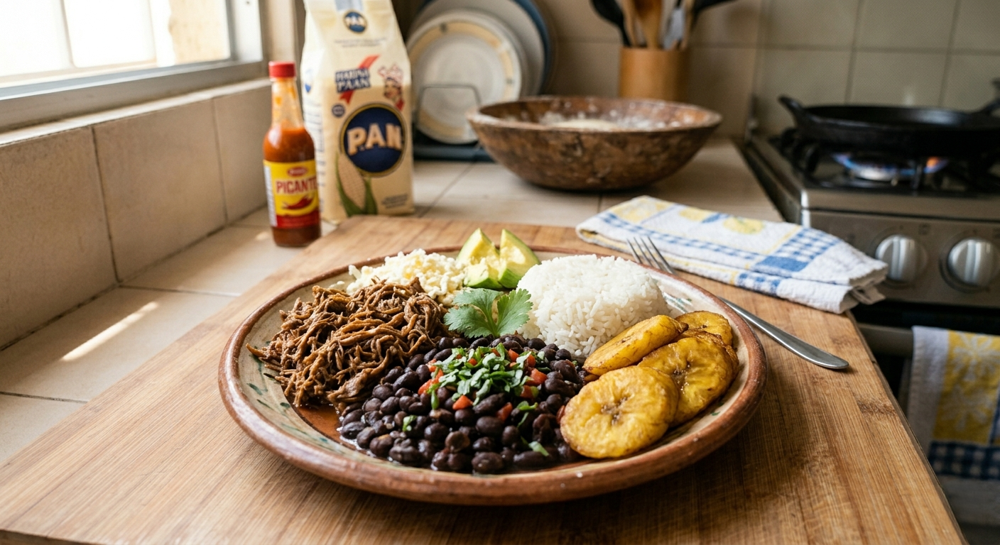
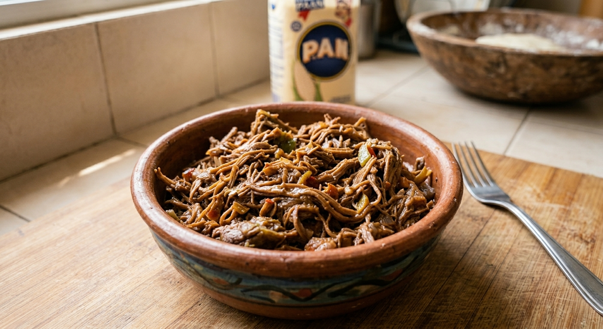
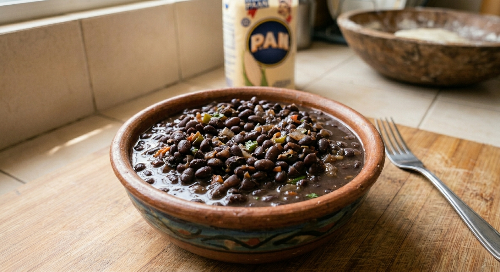
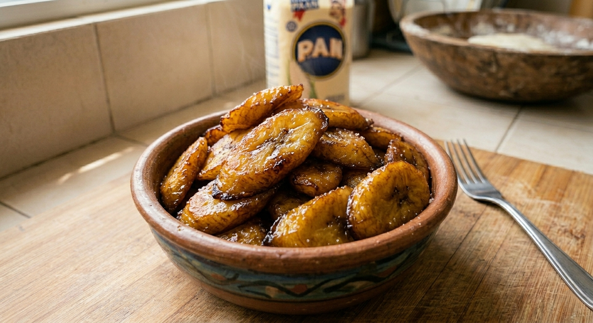

Pabellón Criollo: Identidad en un Plato

El Pabellón Criollo es el plato nacional de Venezuela por excelencia. Se compone de cuatro elementos fundamentales: arroz blanco, carne mechada, caraotas negras y tajadas (plátano frito). Se dice que este plato representa la unión de las razas que conformaron la nación, fusionando ingredientes europeos, africanos e indígenas.
La clave de un buen pabellón reside en el sazón de la carne mechada y el sofrito de las caraotas. La carne se cocina hasta que está tierna para luego ser deshilachada a mano y guisada con cebolla, pimentón y ajo. Por su parte, las caraotas negras suelen prepararse con un toque dulce o salado, dependiendo de la región del país.
Este plato no es solo una comida completa y nutritiva, sino un viaje por la historia de Venezuela. Cada bocado ofrece un contraste de texturas y sabores: lo salado de la carne, lo neutro del arroz y el dulzor de las tajadas maduras. Es el reflejo de un mestizaje culinario que sigue vivo en cada rincón de la geografía venezolana.


